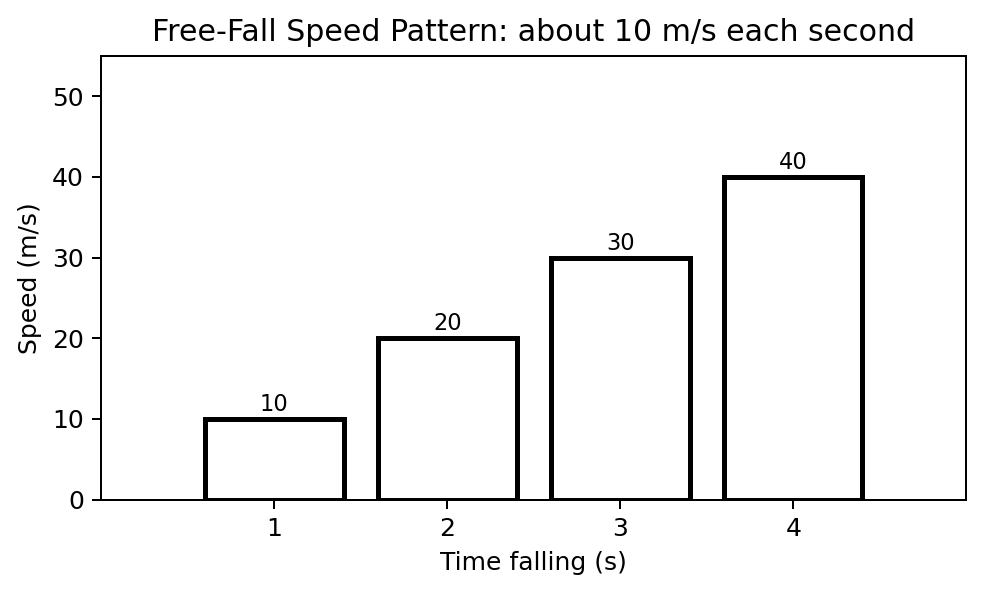
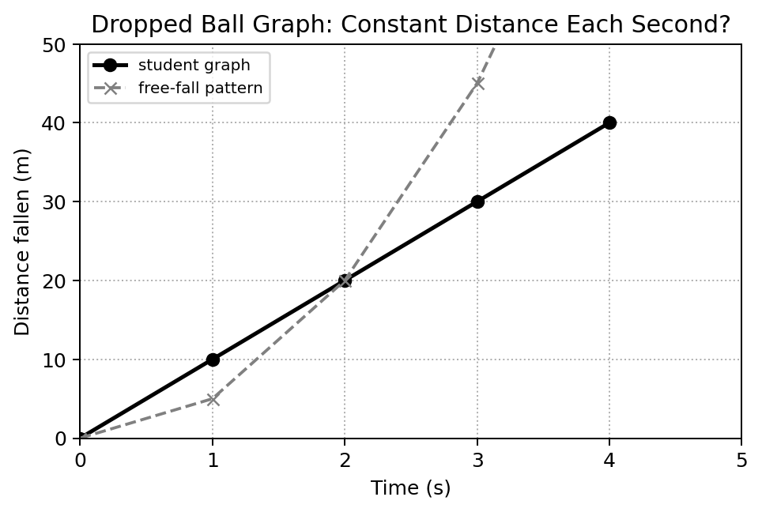

Free Fall Motion
- I can explain why objects in free fall accelerate at the same rate when air resistance is ignored.
- I can use g ≈ 10 m/s² to determine speed gained during free fall.
- I can use free-fall patterns to compare distance fallen during different time intervals and distinguish free fall from falling with significant air resistance.
Sort before reading. Place each term where it best fits your current understanding.
Free fall is motion in which gravity is the only significant force acting on an object. Near Earth’s surface, an object in ideal free fall has nearly constant downward acceleration. In this course we use g ≈ 10 m/s² as a useful model unless a problem states otherwise.
The word “free” does not mean the object moves in a special direction. An object dropped from rest, thrown downward, or thrown upward can all be in free fall after release if air resistance is ignored. What matters is that gravity is the only significant force.
Why Mass Does Not Change Ideal Free-Fall Acceleration
It is tempting to think a heavier object must fall faster because gravity pulls more strongly on it. The missing idea is inertia. A more massive object experiences a larger gravitational force, but it also has more resistance to acceleration. In the ideal model, those effects scale together, so different masses share the same gravitational acceleration.
Real falling objects can behave differently when air resistance matters. A flat sheet of paper and a compact ball fall differently in air mostly because their shapes interact with the air differently, not because gravity gives the heavier object a fundamentally different free-fall acceleration.
Situation: Two compact objects of different masses are released together in a vacuum near Earth.
- Air resistance is absent, so both objects are in ideal free fall.
- Both have the same downward acceleration g.
- If they start from the same height with the same initial velocity, equal acceleration keeps their motion matched.
Result: They reach the floor together in the ideal model.
Two compact objects of different masses are released from the same height in a vacuum. Predict their motion and explain the role of mass.
Speed Gained During Free Fall
An acceleration of about 10 m/s² means the velocity changes by about 10 m/s every second. For an object dropped from rest, the downward speed is about 10 m/s after 1 s, 20 m/s after 2 s, and 30 m/s after 3 s. The speed does not increase by equal percentages; it increases by about the same amount each second.

Situation: A rock is dropped from rest and falls for 2.5 s with negligible air resistance.
- Use speed gained ≈ g × time.
- Substitute g ≈ 10 m/s² and time = 2.5 s.
- 10 × 2.5 = 25.
Result: The speed is about 25 m/s downward after 2.5 s.
A ball is dropped from rest and falls for 3.2 s with negligible air resistance. Estimate its downward speed.
Distance Grows Faster Than Time
Because a falling object speeds up, it covers more distance during each new second than during the previous second. For an object dropped from rest under constant gravitational acceleration, a useful near-Earth pattern is distance ≈ 5t² when distance is in meters and time is in seconds. This comes from one-half of g times time squared using g ≈ 10 m/s².
After 1 s, the distance is about 5 m. After 2 s, it is about 20 m. After 3 s, it is about 45 m. Notice that tripling time does not merely triple the distance; the squared time makes distance increase much more rapidly.
Situation: Estimate how far an object dropped from rest falls in 3 s.
- Use distance ≈ 5t².
- Square the time: 3² = 9.
- Multiply: 5 × 9 = 45.
Result: The object falls about 45 m in 3 s in the ideal model.
Estimate how far an object dropped from rest falls in 4 s using distance ≈ 5t².
Graphs Must Match the Story
A dropped object has approximately constant acceleration, so its velocity changes linearly with time. Its distance does not increase linearly with time because the object is covering more ground during each equal interval. A straight-line distance–time graph would incorrectly suggest constant speed.

Air Resistance and Terminal Speed
Air resistance is a force that opposes motion through the air. As a falling object speeds up, air resistance can grow. When air resistance becomes large enough to balance the object’s weight, the net force becomes approximately zero and acceleration becomes approximately zero. The object then continues downward at nearly constant terminal speed.
This is not ideal free fall because gravity is no longer the only significant force. Shape, area, air density, and speed all affect air resistance. That is why a parachute changes falling motion so strongly even though the person’s mass has not suddenly changed.